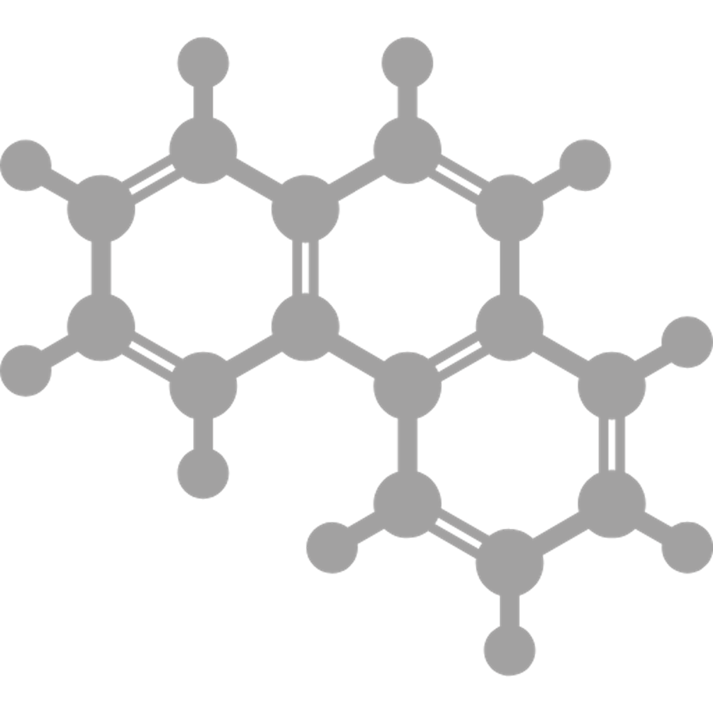

Research
Cost benefit analysis of low aromatic fuels
Problem
Aromatics have higher binding energy between atoms compared to aliphatic compounds. Jet fuel with higher aromatics content has higher soot emissions.
Soot emissions have a variety of impacts:
- Air quality related health impacts
- Climate impacts due to direct & indirect radiative forcing via contrails

Opportunity
Reduce aromatics content via refining
⬇️
Reduce soot emissions
⬇️
Reduce environmental impact of jet fuel
Opportunity hypothesis:
refining-driven aromatics reduction can lower soot and downstream climate/health impacts.
Research objective: Conduct cost-benefit analysis of production and utilization of low aromatic jet fuel via refining processes
Scope:
- Consider 2 forms of refining: hydrotreatment and extractive distillation
- Assess model with 3 different crude oils with various sulfur/aromatics content
- Evaluate climate and air quality benefits/disbenefits from production and utilization of low-aromatic fuel
- Conduct sensitivity analysis
Weekly updates
Week 1
Click to view details
(Week 1 opens in its own page.)

About
Background
I'm Tara Housen, a Doctoral candidate in Aeronautics and Astronautics at MIT working in the Lab for Aviation and the Environment.
I earned my B.S. in Mechanical Engineering at Villanova University and am now at MIT for my Ph.D. in Aeronautics and Astronautics, focused on sustainable aviation fuels and their environmental and economic impacts.
Resume
Download resume: resume.md
Contact
Email: thousen@mit.edu
Phone: 732-456-2041
Location: 412 Laurel Ave, Brielle, NJ 08730